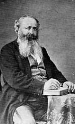
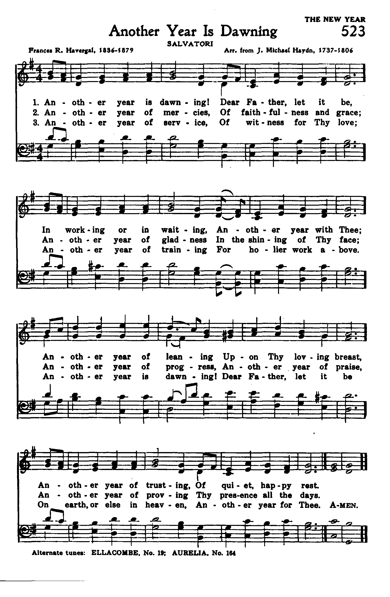

|
|
颂主新歌 |
|
1 How dearly God doth love us, 2 He bids the sun to warm us, 3 The Bible, too, he gave us, |
1.真神何等爱我众和这恶劣世界， |
|
https://www.mred365.cn/szxg/7083.html
|
|
|
|
|


How Dearly God Must Love Us Hymn Christian Church Song Mennonite Singing Anabaptist https://youtu.be/5Y1aryrthHQ - How Dearly God
Must Love Us
https://youtu.be/ddCFGj9q3Es
| Text: | God Loves Us |
| Author: | Samuel Partridge |
| Short Name: | S. W. Partridge |
| Full Name: | Partridge, S. W. (Samuel William), 1810-1903 |
| Birth Year: | 1810 |
Partridge, Samuel William, publisher of the British Workman and kindred works, is the son of Samuel Partridge, and was born in London Nov. 23, 1810. His hymns were published in his Important Truths in Simple Verse, 1841; Rhymes Worth Remembering, 1848. From the former his popular hymn, "How dearly God must love us" (Flower Services), is taken. Another of his hymns in common use is, "Thou Who hast in mercy blest" (Morning). This is in The Church Sunday School Hymn Book, 1868.
--John Julian, Dictionary of Hymnology, Appendix, Part II (1907)
Born: November 23, 1810, London, England.
Baptized: April 21, 1811.
Died: July 1903, England.
Buried: Abney Park Cemetery, Stoke Newington, London, England.
Biography
Partridge was the son of Samuel and Elizabeth Partridge, and husband of Eliza Partridge.
Works
- Important Truths in Simple Verse (London: J. Souter, 1841)
- Rhymes Worth Remembering, 1848
Samuel William Partridge (1810-1903) was born in London, England. He began his printing career as a reader at “Woodfall & Kinder.” He subsequently joined Mr. Daniel Oakley to form “Partridge & Oakley.” After this partnership dissolved he reorganized under the name “S. W. Partridge & Co.” Mr. S. W. Partridge retired in 1882. Mr. Partridge was an author poetry and hymns and most notably wrote “Upward and Onward,” a book of Christian poetry.
Daniel F. Oakley (?-1865) was a bookseller, publisher, printer, and stationer. He originally published under the name “Daniel F. Oakley.”
Tune Information
| Title: | ENDSLEIGH |
| Composer: | Salvatore Ferretti |
| Meter: | 7.6.7.6 D |
| Incipit: | 32112 23117 62171 |
| Key: | G Major |
| Copyright: | Public Domain |
| Short Name: | Salvatore Ferretti |
| Full Name: | Ferretti, Salvatore, 1817-1874 |
| Birth Year: | 1817 |
| Death Year: | 1874 |
Born: September 15, 1817,
Florence, Italy.
Died: May 4, 1874, Florence, Italy.
Buried: English Cemetery, Florence, Italy.
Ferretti, Salvatore (b. 1817, d. 1874),

lived for a time in England, where he edited a journal entitled, L'Eco di Savonarola, and in 1850 published Inni e Salmi ad uso dei Cristiani d' Italia (Lond., Partridge and Oakey). He afterwards returned to Florence, where he established a Protestant orphanage. Six of his hymns are in common use.
--John Julian, Dictionary of Hymnology, Appendix I (1907)
